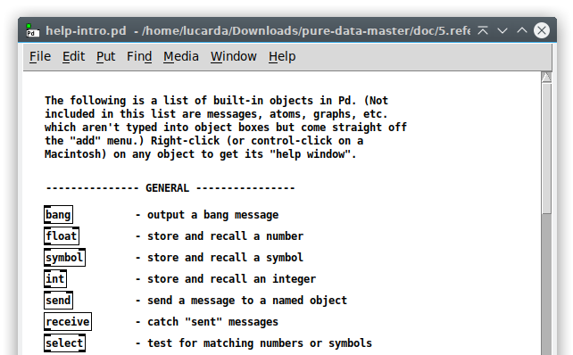
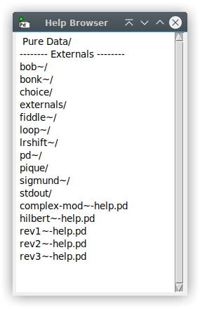
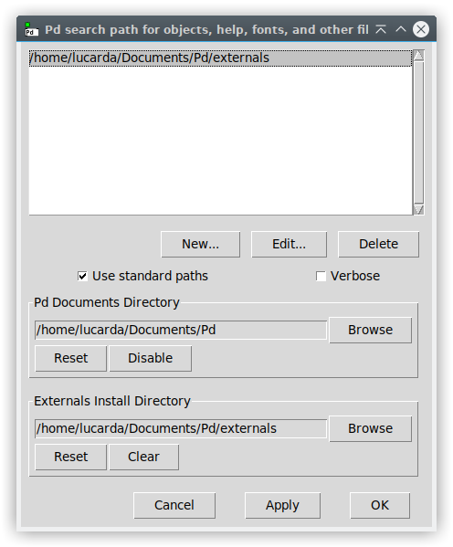
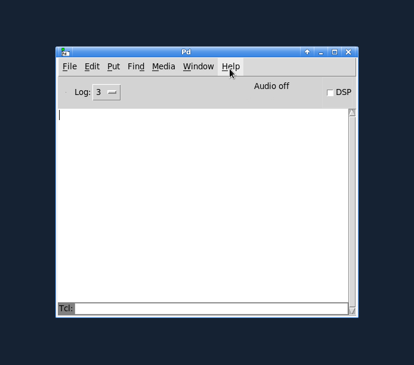
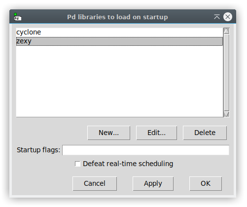
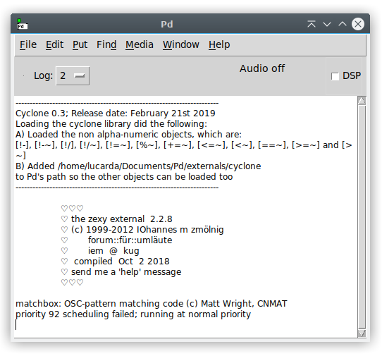
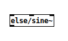

Pd Manual: externals
Externals
This section explains what are external objects and libraries. It also describes everything on how to install and load them in Pure Data.
You can write your own external objects that you and others can use in their Pd applications in C or (if you’re smart and brave) in C++ or FORTRAN. In the “6.externs” subdirectory of the documentation you can find simple examples of externals with their source code and test patches.
There’s also an excellent guide to writing externals project by IOhannes zmölnig at https://github.com/pure-data/externals-howto. Check also the pd-lib-builder project (a helper makefile for Pure Data external libraries by Katja Vetter) at http://github.com/pure-data/pd-lib-builder
External Objects & Libraries
What are: Vanilla Objects, Internals & Externals?
Internal objects come as part of the Pd binary, whereas external objects are separate from it. The main Pd distribution (a.k.a. “Pd Vanilla”) also comes with a few “extra” objects that are not part of its binary. Therefore, the set of “vanilla objects” (the built-in objects in Pd) include internals and externals. Nonetheless, “externals” mostly refer objects not available in the Pd Vanilla distribution, that you need to download and install them properly so they can be loaded into Pd patches.
To get a full list of all objects in Pd Vanilla, go to the Help menu and then select List of Objects, or alternatively right click on an empty spot of a patch’s window and select “help” - this loads the help-intro.pd file (see below).

The set of externals that come with Pd are available in the ’extra' library and is located in a folder named “extra” inside the Pd application. These appear at the very end of the “help-intro.pd” and can also be viewed in the Help Browser menu (Help => Browser). See figure below, which shows how the browser looks in a fresh install of Pd and lists the objects in the extra folder.

What are the Types of External Objects?
An object in Pd can be either a patch - meaning a Pd file (a.k.a abstraction) - or a compiled binary (note that a binary can contain only one or several external objects, as discussed further on).
Compiled objects:
These are Pd objects compiled to binaries from programming code (like in C or C++). They have to be compiled for your operating system, which means the binaries have different extensions according to each platform. For instance:
| Operating System | CPU-architecture | filename |
|---|---|---|
| Linux | unspecified (any architecture) | my_lib.pd_linux |
| Linux | i386 (Intel/AMD 32bit) | my_lib.l_i386 |
| Linux | amd64 (Intel/AMD 64bit) | my_lib.l_amd64 |
| Linux | arm (e.g. RaspberryPi) | my_lib.l_arm |
| Linux | arm64 | my_lib.l_arm64 |
| macOS | unspecified (any architecture) | my_lib.pd_darwin |
| macOS | fat (multiple archs) | my_lib.d_fat |
| macOS | PowerPC | my_lib.d_ppc |
| macOS | i386 (Intel 32bit) | my_lib.d_i386 |
| macOS | amd64 (Intel 64bit) | my_lib.d_amd64 |
| macOS | arm64 (Apple Silicon) | my_lib.d_arm64 |
| Windows | unspecified (any architecture) | my_lib.dll |
| Windows | i386 (Intel/AMD 32bit) | my_lib.m_i386 |
| Windows | amd64 (Intel/AMD 64bit) | my_lib.m_amd64 |
Abstractions:
You can have a Pd patch behave like an object by loading it into other patches - these are usually called “abstractions”. Note that some of the externals in “extra” are abstractions (for instance, rev1~ or hilbert~). Like any other Pd patch, an abstraction may contain any kind of objects (internals, compiled externals and even other abstractions).
What are External Libraries?
In practical terms, an external library is a collection of external objects of any kind (abstractions or compiled objects). But when it comes to compiled objects, a library can provide several objects as a single binary pack or as a set of separate binaries (where each object has its own binary).
The “classic” library format is a single binary pack (with two or more externals), but splitting into separate binaries became a very common practice. A single external binary (not part of any set of objects) is still, technically, a library with just one object. But again, the prevailing idea is that a library is just a set of objects.
It’s important to note that there are differences on how externals are loaded depending if they’re a single binary pack or a set of separate binaries (as explained in the next subsections).
What are the types of External Libraries?
Libraries can come in all sorts of ways; as only a collection of abstractions (like “list-abs”), only compiled objects, or both. It can even mix compiled externals both as a set of separate binaries and a single binary pack. Basically, any combination is possible for a set of external.
One example that combines all external options is Cyclone (since version 0.3), which provides most of its objects as a set of separate binaries, but also includes a small collection of 12 objects as a single binary pack plus a few abstractions.
Wrapping up Part 1)
- Internal objects: Objects that are part of Pd Vanilla’s binary.
- External objects: Objects that are NOT part of Pd Vanilla’s binary.
- Vanilla objects: Built-in objects in the Pd Vanilla distribution (including internals and a small collection of externals - the “extra” objects).
- Types of external objects: Compiled binaries or Abstractions.
- External Library: Collection of external objects in any form, be it a “single binary pack” containing several objects, a “set of separate binaries” / abstractions or any combination of them.
Installing External Objects and Libraries
Installing externals in Pd is quite simple, all you need to do is download your externals from somewhere, such as from Pd Vanilla directly, and include them in a proper folder.
Where to include the externals?
Currently, when launching for the first time with a fresh install, Pd asks if you want to create a documents directory for patches that includes an “externals” subdirectory. This externals folder is where it’s advised to include external libraries and it’s automatically included in the user added search paths (under Preferences => Path), see figure below.

We see in the screenshot above that the “Pd” folder is created under ~/Documents, and inside it we have the externals subfolder. Even if you did not create this folder, here is where you can create it by clicking the “Reset” button under “Pd Documents Directory”.
Externals can actually be anywhere in your computer, but Pd must know where to look for them. Pd looks for files (including externals) in the user added search paths, but it also searches in other folders not listed there such as: the same folder that your patch is saved on (the Relative Path) and the Standard Paths, which are:
- A) Application-specific: The “extra” folder inside a particular Pure Data application.
- B) User-specific: A system folder for a specific user in the machine.
- C) Global: A system folder for all users on the machine.
Officially, there’s only one ‘Standard Path’ which is the ’extra’ folder. The others are not automatically created by Pd and are part of an old structure. Currently, the best practice is to use the default external folders or user added paths, but these other options are documented here anyway and may be useful in some edge cases.
The Global folder affects all Pure Data Applications for all users. The User-specific folder affects all Pure Data Applications for that user. And since you can have different versions of Pd installed in your system, the Application-specific folder affects only that particular Pd Application - multiple Pd applications can be of different versions (an older and a newer one or both 32-bit and 64-bit). For reference, here’s the list of the Standard Paths for all operating systems:
A) macOS:
- Application-specific:
/$PdPath/Contents/Resources/extra- this is inside the Pd Application (like Pd-0.49-1 in~/Applications); right click it and choose “Show Package Contents”, then navigate toResources/extra. - User-specific:
~/Library/Pd(/Users/user_name/Library/Pd) - Global:
/Library/Pd
B) Windows:
- Application-specific:
%ProgramFiles(x86)%\Pd\extra(for 64-bit OS and 32-bit Pd) or%ProgramFiles%\Pd\extra; this is inside the Pd Application (usually inC:\Program Files). This folder needs to be set to writeable. - User-specific:
%AppData%\Pd(usually inC:\Users\user_name\AppData\Roaming\Pd). - Global
%CommonProgramFiles%\Pd(usually inC:\Program Files\Common Files\Pd).
C) GNU/Linux:
- Application-specific:
/usr/lib/pd/extraif installed via a package manager (apt-get) or/usr/local/lib/pd/extraif compiled by yourself. - User-specific:
~/.local/lib/pd/extra(preferred since version Pd-0.47-1) or~/pd-externals(deprecated but still usable). - Global:
/usr/local/lib/pd-externals
How to Download Externals from Pd Vanilla?
Since version 0.47-0, Pd Vanilla has its own external manager! This is a built in .tcl plug-in named “deken” (check https://github.com/pure-data/deken for reference). Open it by selecting the Help => Find externals tab. Then you can type and search for object name, library name or both. The wildcard ‘*’ can be used to broaden the search, or an exact name can be used instead. All available versions of the library/external specific for your operating system will be shown to you. See figure below.

When you click on the version you want, by default Pd downloads it to
~/Documents/Pd/externals.
Loading Externals
The current best practice is to use the declare object to search for, load and manage externals, but there are alternatives.
If the object is from a library that is distributed as a single binary pack, this binary needs to be pre loaded so Pd can create its externals. This is done either with declare or manually via Preferences => Startup.
If the external library only contains abstractions or objects compiled as a set of separate binaries, Pd just needs to know its path. Again, this can be done with declare or manually via Preferences => Path, but yet another option here is to use slash declarations as we’ll see later.
Using the [declare] object:
The declare object can be used to add search paths or load libraries. When adding a path, it behaves quite similarly to adding search paths to the user added paths (under Preferences => Path). The difference is that this will only work for the patch that contains the declare object - unlike using path, which loads permanently for any patch.
As for loading a library, once Pd loads it (via [declare] or startup) it sticks with it. This means that if you use [declare] to load a library, it will also be loaded if you create a new patch without any [declare] object.
[declare -path]:
Let’s take for an example the ELSE library. This library contains separate binaries and abstractions, so Pd only needs to know its location path. We then use the ‘-path’ flag as in [declare -path else]. This makes Pd look for a folder named ’else’ to add it to the search path for that patch only. When and if it succeeds in finding this folder with [declare], this is where Pd will prioritize the search of objects and other files, moving on to other possible search places if nothing is found.
But where does Pd look for the ’else’ folder? Well, the -path flag is
first meant to search in the Relative Path, but if it doesn’t find it,
it falls back to the User Added Paths and Standard Paths. So let’s say
you put the ELSE library folder in “~/Documents/Pd/externals”, which is
the current best practice, Pd will know to look for it there and will
find it!
Now, in the case of a single external, the best practice is to include
it in a folder with the same name in “~/Documents/Pd/externals”. An
example, the freeverb~ external should be in
“~/Documents/Pd/externals/freeverb~". In this situation, you don’t
need to add the external folder to the path, manually or use
[declare]. This is because when you tell Pd to look for an external,
if it finds a folder with the same name as the external, it’ll know to
search inside that folder for the external!
[declare -lib]:
The ‘-lib’ flag is needed for the classic Pd library format, which is
a single binary pack with many externals. One such example is the
zexy library. So you should download and
have the ‘zexy’ folder in “~/Documents/Pd/externals/zexy”. Now you
can use [declare -lib zexy] to load the external binary. In the same
way as explained with the freeverrb~ example, the binary is inside a
folder with the same name. So Pd will search for the external in
“~/Documents/Pd/externals”, will find the ‘zexy’ folder and know to
search for the zexy binary in it. This means you don’t need to bother
in using [declare] to define the search path.
Note that it may be possible for you to load a library binary as an object if the developer wished to. But it’s still advisable to use either “Startup” or [declare -lib], because this way you are sure the library is preloaded before Pd tries to create other objects in your patch.
For more details on how [declare] works, please check its help file!
Load via Path and Startup:
We’ll now see the differeces between using [declare] or using “Path” and “Startup”.
User added Path:
One big difference in adding a search path in “Preferences => Path” “is that this permanently adds the path and work every time Pd starts and for any patch you open. When you use [declare], the path is loaded only for its owning patch and loaded abstractions. Moreover, if you have an abstraction with [declare -path], it’ll only work for that abstraction and not the parent patch. Hence, [declare] allows a much better control and management of paths. But you may want to permanently add a path in your own system if you know exactly what you have and what you need.
We’ve seen that even if you have a folder in
“~/Documents/Pd/externals” you still need to tell Pd to look for it.
You can manually add a User Added Paths in Preferences => Path by
clicking “New”.
Another possibility is that under deken’s preferences tabs you can click on “Add newly installed libraries to Pd’s search Path”, which adds downloaded libraries to the user added search paths.
Note also that having a user added search path will not make it have search priority like it happens when you use [declare]. In this case, the path relative to the patch will always have top priority!
Startup:
“Preferences => Startup” loads a window that says “Pd libraries to load on startup”. This is where you can manually and permanently load single binary pack libraries. But since they’re only needed during startup, you need to restart Pd so this takes effect. The startup is also used for configuring Pd in many ways, see Preferences and startup options for reference.

As we’ve seen with ‘zexy’, it’s common that the name of the binary is the same as the library’s, so you don’t need to worry about adding it to the path. Another example is the ‘cyclone’ library. As previously mentioned, Cyclone includes objects as abstractions, as a set of separate binaries and also has a set a single binary pack (which loads objects with non alphanumeric names that need to be loaded as such to avoid issues). One particularity of cyclone is that loading its binary will also force Pd to add its path to the search paths, so you don’t need to bother adding it to the path as well in order to be able to load its abstractions or separate binaries. Another example that uses this feature is Gem , which loads as a binary pack but also includes a few abstractions that rely on the path search. Note, however, that unlike using [declare], this does not enforce a search priority! Hence, for example, you may prefer to use [declare -path cyclone -lib cyclone] instead.
It all depends on the developer, but it is a common and good practice that when you load a library, Pd’s terminal window will print something to tell us that the libraries were loaded successfully. Here’s a screenshot of the result of loading cyclone and zexy via the startup (same happens if you load them via [declare], clearly).
Note that when you load a library like this or via [declare -lib], all of its external objects are loaded in Pd and they have search priority. This may cause issues discussed on the next section.

Slash declarations:
What is this and how does it work? Let’s say you’ve downloaded the ELSE
library into ~/Documents/Pd/externals. Instead of using [declare -path
else] or adding the ELSE folder to the user added paths manually, you
can just prepend “else/” before an object name. This will make Pd look
for this object in a folder called ’else’ in one of its search paths
(which includes ~/Documents/Pd/externals) and find it! Here’s an
example:

Now, what’s the need or advantage of this over using [declare] or adding the folder to the user added paths? This can be an option that some people may prefer for the simple fact that it’s just clearer from which library folder we’re loading the external. But there are some rare cases where this is the only way to guarantee you have loaded the correct external, which is a problem when you have too many libraries in your system and are using more than one that has an external with the same name. Hence, some external libraries like ‘Cyclone’ and ‘ELSE’ use this in the documentation of the help files to make sure you load the correct external.
Note, however, that this is not possible for an external that is loaded as part of a single binary pack, unless the developer uses a workaround to add this possibility as alternative.
The issue with [declare] or adding a path to the user added paths is that it’ll respect a search order. Whatever path is added first in the search list order has a priority, and where ever Pd finds an external first, it’ll load it and stop searching elsewhere. Again, this kind of problem is not that common, but you may be able to sort this issue by setting the desired order. This is quite easy in [declare], which ever -path comes first in the list has a priority. You can try this if you want to avoid slash declarations when you run into this rare issue.
Such conflicts can also happen when you’re loading single binary pack libraries. The problem is that once they get loaded, all of its external objects are now part of Pd and have a priority in the search. Here’s an example, the ‘ceammc’ library is a single binary pack and it included an object called [xfade~]. The ELSE library has separate binaries for each object and also has one called [xfade~]. If you’re using both libraries, ceammc’s [xfade~] object will have priority and it doesn’t help you to have [declare -path else]. You can then use [else/xfade~] to specifically call ELSE’s [xfade~] instead.
It was mentioned how a library name prefix may also be possible in the context of single binary packs. The ceammc library offers this, so you can also load its [xfade~] object as [ceammc/xfade~]. But note that this still requires you to preload the binary (via startup or [declare]). The slash declaration here was only possible because the developer added the ‘ceammc/xfade~’ name as an alternative option in the code. So it is just a hack to improve the limitation of Pd in handling namespaces. Another library that does this is Cyclone, which carries a sublibrary with 12 objects with non alphanumeric names, such as [>~]. By using the same trick, you can create the [>~] object as [cyclone/>~]. Another single binary pack library that has [>~] is zexy, so this way you can make sure you’re getting cyclone’s instead.
These issues might be clear if you better understand how Pd works when loading externals. See next subsection.
How external binaries are loaded
Once you make sure Pd can load an external binary, this is what happens when you create it. Whenever you type the name of an object (into an “object” box) that Pd doesn’t yet know about, Pd looks for the object file named, for instance, as “profile.pd_linux”. Pd looks first in a path defined by [declare] (if any, of course), then in the directory containing the patch, then in directories listed as user added paths in the orderr they are listed, then in the standard paths. As soon as Pd finds the object in this search order, it’ll stop searching further more and will add the found object to its “class list”, which is the set of all Pd classes you can use. Pd then tries to create the object you asked for, and if everything is fine with it, this happens successfully (creation errors are given otherwise). In the case of a single binary pack, all the externals it contains get preloaded in Pd, even though they’re only created in object boxes when you require them.
Once an external object’s binary is in Pd’s memory, there is no real difference between it and a native object. They’re all seen equally now in Pd. Once a new separate binary or single binary pack is loaded, it’s there for the duration of your Pd session. This means that if you replace the binaries, the objects won’t be updated even if you recreate them. You can also even delete the binary as Pd now carried it for good. Hence, if you’re working on the development of an object’s binary and decide to change it, you have to exit and re-enter Pd to get the change to take.
Let us just make the distinction that external abstractions work quite differently! As they get updated any time they’re updated and reloaded!
Overriding objects (externals and native):
We’ve seen that Pd loads and sticks to an external. But this can get overridden. We’ve actually seen that already. For instance, you create [xfade~] from ELSE, then you load ceammc’s binary that also has an [xfade~] object. Now Pd only knows about [xfade~] from ceammc! It’s been also noted how cyclone and zexy have objects with the same name. If you first load cyclone’s binary and zexy’s later, zexy’s objects with the same name (such as [>~]) will override and prevail.
And here’s an interesting feature, you can also override internal Pd Vanilla objects with externals! Say you have an external called [phasor~]. If it’s a single binary, you can force Pd to find it with slash declarations. Otherwise, if it’s a binary pack, you can load as any other library and if it has objects with the same name as vanilla’s internals, they get overridden! But Pd still keeps a copy of the old one and renames it by appending “_aliased”, so you can still load the old “phasor~”, for instance, as [phasor~_aliased]. You probably don’t want to mess with overriding internals, but it makes sense if you provide new versions with more features but fully backwards compatible.
Search order for loading objects
This information has been provided in pieces throughout this section of the Manual. But now well wrap it up after all the information has been presented.
So, whenever you tell Pd to create an object in its box, this is what happens.
First it searches in its object list. This includes all of Pd’s internals and other externals that may have been previously loaded.
Second, it moves on to possible paths. And if you have [declare -path] in your patch, the defined path(s) has/have priority respecting the order they are listed from left to right.
Third is time to search the path relative to the patch.
Fourth it goes to the user added paths, defined at “Preferences => Path”. An order is also respected, from top to bottom.
Fifth and last, it searches the “standard paths”, which includes the ’extra’ library provided by the Pd Vanilla distribution. Note you can use [declare -stdpath ./] to force priority to search this folder!